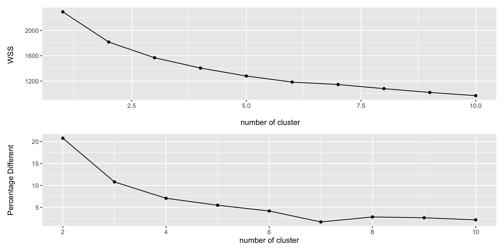

Rows: 11
Columns: 8
$ x1 <dbl> 10, 8, 13, 9, 11, 14, 6, 4, 12, 7, 5
$ x2 <dbl> 10, 8, 13, 9, 11, 14, 6, 4, 12, 7, 5
$ x3 <dbl> 10, 8, 13, 9, 11, 14, 6, 4, 12, 7, 5
$ x4 <dbl> 8, 8, 8, 8, 8, 8, 8, 19, 8, 8, 8
$ y1 <dbl> 8.04, 6.95, 7.58, 8.81, 8.33, 9.96, 7.24, 4.26, 10.84, 4.82, 5.68
$ y2 <dbl> 9.14, 8.14, 8.74, 8.77, 9.26, 8.10, 6.13, 3.10, 9.13, 7.26, 4.74
$ y3 <dbl> 7.46, 6.77, 12.74, 7.11, 7.81, 8.84, 6.08, 5.39, 8.15, 6.42, 5.73
$ y4 <dbl> 6.58, 5.76, 7.71, 8.84, 8.47, 7.04, 5.25, 12.50, 5.56, 7.91, 6.89Exploratory Data Analysis
ผศ.ดร.สิวะโชติ ศรีสุทธิยากร
ภาควิชาวิจัยและจิตวิทยาการศึกษา
คณะครุศาสตร์ จุฬาลงกรณ์มหาวิทยาลัย
Exploratory Data Analysis (EDA)
เป็นกระบวนการที่นักสถิติและนักวิทยาการข้อมูลใช้สำหรับสำรวจและวิเคราะห์ข้อมูลเบื้องต้น โดยมีวัตถุประสงค์หลักคือ “การทำความเข้าใจ/สร้างองค์ความรู้จากข้อมูล”
ทำความเข้าใจลักษณะของโครงสร้างและสภาพของข้อมูล
ตรวจสอบความผิดปกติของข้อมูล และดำเนินการแก้ไขเพื่อให้ข้อมูลมีความพร้อมสำหรับการวิเคราะห์ขั้นสูงต่อไป
ค้นหาสาระสำคัญที่ซ่อนอยู่ในข้อมูล เช่น การเปรียบเทียบหรือตรวจสอบความสัมพันธ์ระหว่างตัวแปร
EDA
Understand the data
Conducted at preliminary stage
Generate research question/hypothesis
Using a lot of tools (not specific)
CDA
Test Specific hypothesis using data
Conducted after EDA
Speicific tools
EDA มีขั้นตอนอย่างไร?
“There are no routine statistical questions, only questionable statistical routines.” — Sir David Roxbee Cox
EDA is not a formal process with a strict set of rules. More than anything, EDA is a state of mind. During the initial phases of EDA you should feel free to investigate every idea that occurs to you. Some of these ideas will pan out, and some will be dead ends. As your exploration continues, you will home in on a few particularly productive areas that you’ll eventually write up and communicate to others. (Wickham & Grolemund, 2023)
โดยปกติการทำ EDA มักเป็นการดำเนินงานที่ต้องทำแบบทวนซ้ำ ประกอบด้วยขั้นตอนสำคัญ
- ตั้งคำถามเกี่ยวกับข้อมูล เช่น “มีรูปแบบการกระจายตัวของข้อมูลอย่างไร?” “มีความสัมพันธ์ระหว่างตัวแปรต่าง ๆ หรือไม่?” หรือ “มีค่าผิดปกติอยู่ในข้อมูลหรือไม่?”
- หาคำตอบด้วยเครื่องมือทางสถิติและวิทยาการข้อมูล เพื่อสร้างสารสนเทศ/สารสนเทศเชิงลึกจากข้อมูล เครื่องมือที่เกี่ยวข้อง เช่น สถิติพื้นฐาน ทัศนภาพข้อมูล โมเดลทางสถิติ หรืออัลกอริทึมการเรียนรู้ของเครื่อง
- ใช้สารสนเทศที่ได้เพื่อปรับคำถาม/สร้างคำถามใหม่ สารสนเทศที่ได้จากการวิเคราะห์อาจช่วยให้ผู้วิเคราะห์จำเป็นต้องตั้งคำถามเพิ่มเติมหรือปรับคำถามเดิม เพื่อให้การวิเคราะห์ข้อมูลสามารถเจาะลึกและมีความหมายมากขึ้น กระบวนการนี้เป็นการทวนซ้ำที่ช่วยให้เราสามารถค้นพบข้อมูลเชิงลึกที่อาจไม่สามารถเห็นได้ในขั้นตอนแรก
กิจกรรม: Anscombe dataset (1)
ชุดข้อมูล anscombe ประกอบด้วยข้อมูลของตัวแปรตาม y กับตัวแปรอิสระ x จำนวน 4 ชุด วัตถุประสงค์ของการวิเคราะห์นี้คือเพื่อวิเคราะห์ความสัมพันธ์ระหว่างตัวแปรตาม y กับตัวแปรอิสระ x ของข้อมูลแต่ละชุด
ลองคำนวณค่าสถิติบรรยายของตัวแปรตามกับตัวแปรอิสระในแต่ละชุดข้อมูล
# A tibble: 8 × 3
variable mean sd
<chr> <dbl> <dbl>
1 x1 9 3.32
2 x2 9 3.32
3 x3 9 3.32
4 x4 9 3.32
5 y1 7.50 2.03
6 y2 7.50 2.03
7 y3 7.5 2.03
8 y4 7.50 2.03EDA: Anscombe dataset (2)
- ลองวิเคราะห์ความสัมพันธ์ระหว่างตัวแปรตามกับตัวแปรอิสระของข้อมูลแต่ละชุดด้วย correlation
ind dep correlation
1 x1 y1 0.8164205
2 x2 y2 0.8162365
3 x3 y3 0.8162867
4 x4 y4 0.8165214- ลองวิเคราะห์ความสัมพันธ์ระหว่างตัวแปรตามกับตัวแปรอิสระในข้อมูลแต่ละชุดด้วย simple regression \(y_i = \beta_0 + \beta_1x + \epsilon_i\)
$Dataset1
# A tibble: 2 × 5
term estimate std.error statistic p.value
<chr> <dbl> <dbl> <dbl> <dbl>
1 (Intercept) 3.00 1.12 2.67 0.0257
2 X 0.500 0.118 4.24 0.00217
$Dataset2
# A tibble: 2 × 5
term estimate std.error statistic p.value
<chr> <dbl> <dbl> <dbl> <dbl>
1 (Intercept) 3.00 1.13 2.67 0.0258
2 X 0.5 0.118 4.24 0.00218$Dataset3
# A tibble: 2 × 5
term estimate std.error statistic p.value
<chr> <dbl> <dbl> <dbl> <dbl>
1 (Intercept) 3.00 1.12 2.67 0.0256
2 X 0.500 0.118 4.24 0.00218
$Dataset4
# A tibble: 2 × 5
term estimate std.error statistic p.value
<chr> <dbl> <dbl> <dbl> <dbl>
1 (Intercept) 3.00 1.12 2.67 0.0256
2 X 0.500 0.118 4.24 0.00216EDA: Anscombe dataset (3)
“Far better an approximate answer to the right question, which is often vague, than an exact answer to the wrong question, which can always be made precise.”
— John Tukey

การวิเคราะห์ที่เป็นไปได้
การสํารวจโครงสร้างชุดข้อมูล เช่น
glimpse(),str(),head(),tail()สำรวจสภาพ/การแจกแจงของข้อมูล
- สถิติพื้นฐาน เช่น การแจกแจงความถี่ ค่าเฉลี่ย ส่วนเบี่ยงเบนมาตรฐาน …
- ทัศนภาพข้อมูล เช่น แผนภูมิแท่ง ฮิสโทแกรม แผนภาพความหนาแน่น …
เปรียบเทียบข้อมูล/สำรวจความสัมพันธ์ระหว่างตัวแปร (Covariation/Relation)
- เปรียบเทียบการแจกแจงของข้อมูล ค่าเฉลี่ย แผนภาพกล่อง
- สหสัมพันธ์ แผนภาพการกระจาย
- การวิเคราะห์การถดถอย
- Decision tree หรืออื่น ๆ
การวิเคราะห์จัดกลุ่ม เช่น K-means clustering, Hierarchical clustering, …
การลดมิติข้อมูล เช่น PCA, PLS หรือ t-SNE
ชุดข้อมูลที่ใช้เป็นตัวอย่าง
เนื้อหาส่วนนี้จะใช้ชุดข้อมูล learning_data.csv เป็นชุดข้อมูลตัวอย่าง
วัตถุประสงค์หลักของการวิเคราะห์คือ
วิเคราะห์ปัจจัยที่มีความสัมพันธ์กับความสำเร็จในการเรียนวิชาวิจัย
สร้างโมเดลทำนายความสำเร็จในการเรียนวิชาวิจัย
จากวัตถุประสงค์หลักจะเห็นว่าเน้นการวิเคราะห์ความสัมพันธ์และการสร้างโมเดลทำนาย การสำรวจข้อมูลจึงอาจจะเน้นสองส่วน ได้แก่
การสำรวจการแจกแจงของตัวแปรแต่ละตัว
การวิเคราะห์ความสัมพันธ์ระหว่างตัวแปร
ชุดข้อมูลที่ใช้เป็นตัวอย่าง
ชุดข้อมูลที่ใช้เป็นตัวอย่าง
ชุดข้อมูลที่ใช้เป็นตัวอย่าง
เนื้อหาส่วนนี้จะใช้ชุดข้อมูล learning_data.csv เป็นชุดข้อมูลตัวอย่าง
วิเคราะห์ปัจจัยที่มีความสัมพันธ์กับความสำเร็จในการเรียนวิชาวิจัย
สร้างโมเดลทำนายความสำเร็จในการเรียนวิชาวิจัย
เรียก library-tidyverse และนำข้อมูลเข้า R
library(tidyverse)
## importing data
data <- read_csv("learning_data.csv")
## print some of data
data# A tibble: 385 × 11
student_id choose_method concepts interpretation research_score submit_time
<dbl> <dbl> <dbl> <dbl> <dbl> <dbl>
1 6341150327 60 57.1 56.2 72 156.
2 6341182427 40 57.1 31.2 72 145.
3 6441001627 40 42.9 50 71 141.
4 6441002227 20 50 43.8 72 150.
5 6441003927 10 21.4 50 62 129.
6 6441005127 20 42.9 75 75 162.
7 6441006827 20 64.3 56.2 82 130.
8 6441007427 40 57.1 50 76 88.6
9 6441008027 50 64.3 62.5 85 130.
10 6441010227 60 42.9 56.2 73 109.
# ℹ 375 more rows
# ℹ 5 more variables: percent_submit <dbl>, gender <chr>, department <chr>,
# learning_performance <dbl>, cheat_index <dbl>1. สำรวจโครงสร้างชุดข้อมูล
ชุดข้อมูลนี้มีตัวแปรกี่ตัว/มีหน่วยข้อมูลกี่หน่วย หน่วยข้อมูลเป็นอะไร?
ตัวแปรในชุดข้อมูลมีตัวแปรอะไรบ้าง สามารถจำแนกประเภทของตัวแปรได้หรือไม่ อย่างไร?
สถานะการเก็บค่าของตัวแปรแต่ละตัวเหมาะสมที่จะนำไปวิเคราะห์แล้วหรือไม่?
ควรจะต้องมีการจัดระเบียบหรือจัดกระทำอะไรเพิ่มเติมมั้ย?
จากผลลัพธ์ที่ได้จาก glimpse() พบว่าชุดข้อมูล learning_data.csv เป็นชุดข้อมูลที่มีหน่วยข้อมูลเป็นนักเรียนจำนวน 385 คน ซึ่งประกอบด้วยข้อมูลจำนวน 11 คอลัมน์ คอลัมน์แรกเป็น student_id ไม่นับเป็นตัวแปร ส่วนที่เหลือเป็นตัวแปรที่เกี่ยวข้องกับความรู้/ทักษะทางด้านสถิติ พฤติกรรมการเรียน ภูมิหลัง และผลสัมฤทธิ์ทางการเรียนในรายวิชาวิจัย
Rows: 385
Columns: 11
$ student_id <dbl> 6341150327, 6341182427, 64410…
$ choose_method <dbl> 60, 40, 40, 20, 10, 20, 20, 4…
$ concepts <dbl> 57.14286, 57.14286, 42.85714,…
$ interpretation <dbl> 56.25000, 31.25000, 50.00000,…
$ research_score <dbl> 72, 72, 71, 72, 62, 75, 82, 7…
$ submit_time <dbl> 156.41160, 145.08406, 141.084…
$ percent_submit <dbl> 66.66667, 100.00000, 100.0000…
$ gender <chr> "ช", "ช", "ญ", "ญ", "ช", "ญ",…
$ department <chr> "ไทยสังคม", "ภาษาอังกฤษ", "ประถ…
$ learning_performance <dbl> 95.00000, 73.33333, 93.21429,…
$ cheat_index <dbl> 0.9143358, 0.5934895, 0.83940…เมื่อพิจารณาสถานะการเก็บค่าของตัวแปรพบว่าตัวแปรเชิงปริมาณทั้งหมดมีการเก็บค่าแบบ dbl ซึ่งเหมาะสมแล้ว อย่างไรก็ตามตัวแปรภูมิหลังได้แก่ gender และ department มีการเก็บค่าเป็น chr อยู่ซึ่งควรเปลี่ยนเป็น fct และเมื่อพิจารณาชุดข้อมูลพบว่าจัดเก็บอยู่ในลักษณะ tidy data แล้วไม่จำเป็นต้องมีการจัดระเบียบอะไรเพิ่มเติม ยกเว้นจะมีวัตถุประสงค์อื่น ๆ จะแสดงให้เห็นในส่วนต่อไป
คำสั่งด้านล่างแสดงการเปลี่ยนสถานะของ gender และ department เป็น fct ตัวอย่างด้านล่างเลือกใช้ฟังก์ชัน mutate_if() เพื่อแปลงตัวแปร chr ทั้งสองตัวพร้อมกัน จะได้ไม่ต้องเขียนคำสั่งหลายบรรทัด
ลองใช้ glimpse() ดูอีกทีว่าสถานะของตัวแปรทั้งสองถูกเปลี่ยนเป็น fct เรียบร้อยแล้วหรือไม่
2. การสำรวจการแจกแจงของข้อมูล
การแจกแจงของข้อมูลให้สารสนเทศเกี่ยวกับ ขอบเขต ค่าที่เป็นไปได้ และความสมเหตุสมผลของข้อมูล นอกจากนี้ยังสามารถให้ข้อสังเกตเกี่ยวกับความผิดปกติของข้อมูล
การแจกแจงความถี่
ค่าสถิติพื้นฐาน เช่น ค่าเฉลี่ย มัธยฐาน ส่วนเบี่ยงเบนมาตรฐาน ค่าต่ำสุด สูงสุด และ quantile
แผนภาพต่าง ๆ เช่น
- Bar chart
- Histogram/Density plot
- Boxplot
2.1 การแจกแจงความถี่
การแจกแจงความถี่จำแนกได้ 2 ลักษณะ คือการแจกแจงความถี่สำหรับตัวแปรจัดประเภท และการแจกแจงความถี่สำหรับตัวแปรเชิงปริมาณ
การแจกแจงความถี่สำหรับตัวแปรจัดประเภท
การแจกแจงความถี่สำหรับตัวแปรเชิงปริมาณ
การแจกแจงความถี่ตัวแปรจัดประเภท
summary()table()count()barplot()ggplot(aes(x))+geom_bar()
ตัวอย่างต่อไปนี้แสดงการแจกแจงความถี่ข้อมูลของตัวแปรจัดประเภทด้วยวิธีการต่าง ๆ ในข้างต้น
### ใช้ summary() ซึ่งตัวแปรจัดประเภทจะต้องถูกเก็บอยุู่ในสถานะ factor
data |>
select(gender, department) |>
summary() gender department
ช:152 ศิลปศึกษา : 55
ญ:233 คณิตศาสตร์ : 44
ไทยสังคม : 38
วิทยาศาสตร์ : 37
จิตวิทยาการปรึกษา การแนะแนวและการศึกษาพิเศษ: 30
ประถมศึกษา : 30
(Other) :151
ช ญ
152 233
การศึกษานอกระบบโรงเรียน การศึกษาปฐมวัย
26 23
คณิตศาสตร์ จิตวิทยาการปรึกษา การแนะแนวและการศึกษาพิเศษ
44 30
ดนตรีศึกษา เทคโนโลยีการศึกษา
21 15
ไทยสังคม ธุรกิจและอาชีวศึกษา
38 25
ประถมศึกษา ภาษาอังกฤษ
30 18
วิทยาศาสตร์ ศิลปศึกษา
37 55
สุขศึกษาและพลศึกษา
23 # A tibble: 2 × 2
gender n
<fct> <int>
1 ช 152
2 ญ 233# A tibble: 13 × 2
department n
<fct> <int>
1 การศึกษานอกระบบโรงเรียน 26
2 การศึกษาปฐมวัย 23
3 คณิตศาสตร์ 44
4 จิตวิทยาการปรึกษา การแนะแนวและการศึกษาพิเศษ 30
5 ดนตรีศึกษา 21
6 เทคโนโลยีการศึกษา 15
7 ไทยสังคม 38
8 ธุรกิจและอาชีวศึกษา 25
9 ประถมศึกษา 30
10 ภาษาอังกฤษ 18
11 วิทยาศาสตร์ 37
12 ศิลปศึกษา 55
13 สุขศึกษาและพลศึกษา 23เราสามารถแจกแจงความถี่ของตัวแปรทั้งสองพร้อมกันได้โดยใช้ฟังก์ชัน pivot_longer() เข้ามาช่วยจัดระเบียบข้อมูลก่อนการแจกแจงความถี่ ดังนี้
data |>
select_if(is.factor) |> ## เลือกเฉพาะตัวแปรที่เป็น factor
pivot_longer(cols = everything()) |> ## ลองสังเกตผลลัพธ์ท่อนนี้
group_by(name) |>
count(value) ## เราจะได้การแจกแจงความถี่ของทั้งสองตัวแปรพร้อมกัน# A tibble: 15 × 3
# Groups: name [2]
name value n
<chr> <fct> <int>
1 department การศึกษานอกระบบโรงเรียน 26
2 department การศึกษาปฐมวัย 23
3 department คณิตศาสตร์ 44
4 department จิตวิทยาการปรึกษา การแนะแนวและการศึกษาพิเศษ 30
5 department ดนตรีศึกษา 21
6 department เทคโนโลยีการศึกษา 15
7 department ไทยสังคม 38
8 department ธุรกิจและอาชีวศึกษา 25
9 department ประถมศึกษา 30
10 department ภาษาอังกฤษ 18
11 department วิทยาศาสตร์ 37
12 department ศิลปศึกษา 55
13 department สุขศึกษาและพลศึกษา 23
14 gender ช 152
15 gender ญ 233ผลการแจกแจงความถี่ภูมิหลังของนักเรียนเป็นอย่างไร?
แนะนำ library-ggplot2
- พัฒนาโดย Hadley Wickham และทีมงาน
- Based on “Grammar of Graphics” (Wilkinson, 2005)
- consistent and intuitive framework
- powerful
- flexible
Marks – องค์ประกอบที่ใช้แสดงข้อมูล เช่น จุด เส้น แท่ง พื้นที่ - กำหนดผ่าน geom_xxx()
Attributes – variants ของ Marks เช่น ตำแหน่ง สี ขนาด มุม - กำหนดผ่าน aes()
โครงสร้าง grammar การเขียนคำสั่งด้วย ggplot2 แสดงด้านล่าง
- สามารถดูรายชื่อ
geom_XXX()เบื้องต้นได้ที่ >> คลิกเลย
ตัวอย่างต่อไปนี้แสดงการสร้างแผนภูมิแท่งเพื่อแจกแจงความถี่ของตัวแปรภูมิหลัง gender
เลือกใช้แท่ง (
geom_bar()) เป็น Markgeom_bar()มีการดำเนินการเบื้องหลัง 2 ส่วนได้แก่- แจกแจงความถี่ของตัวแปรที่กำหนด
- plot แผนภูมิแท่งลงบนแผนภาพ
aes(x = gender)เป็นส่วนที่เรียกว่า aesthetic mapping ทำหน้าที่กำหนดว่าจะให้ attribute ไหนของ Mark ข้างต้น แสดงความแตกต่างของข้อมูล ในที่นี้กำหนดให้ attribute ตำแหน่งของ bar บนแกน X สะท้อนความแตกต่างของข้อมูลเพศ ช และ ญ
การสร้างแผนภูมิแท่งสามารถทำได้หลายลักษณะซึ่งบางทีก็ขึ้นอยู่กับข้อมูลที่นำเข้ามา หรือการประมวลผลข้อมูลก่อนหน้าที่จะสำรวจข้อมูลด้วยแผนภูมิแท่ง ตัวอย่างด้านล่างแสดงการสร้างแผนภูมิแท่งจากการแจกแจงความถี่
การแจกแจงความถี่ของตัวแปรเชิงปริมาณ
การแจกแจงความถี่ของตัวแปรเชิงปริมาณ โดยปกติมักจะต้องมีการแบ่งข้อมูลของตัวแปรเชิงปริมาณออกเป็นช่วงย่อยเรียกว่า อันตรภาคชั้น (class interval) จากนั้นจึงดำเนินการแจงนับจำนวนข้อมูลในแต่ละอันตรภาคชั้น
summary()- ใช้
cut()ร่วมกับsummary(),table()หรือcount() hist()ggplot(aes(x))+geom_histogram()ggplot(aes(x))+geom_density()
ตัวอย่างต่อไปนี้แสดงการใช้ฟังก์ชันข้างต้นเพื่อวิเคราะห์การแจกแจง และการแจกแจงความถี่ของตัวแปรเชิงปริมาณ
research_score cheat_index
Min. :43.00 Min. :0.2402
1st Qu.:65.00 1st Qu.:0.6587
Median :71.00 Median :0.8027
Mean :71.52 Mean :0.7812
3rd Qu.:78.00 3rd Qu.:0.9517
Max. :97.00 Max. :1.0000
NA's :2 ## สร้างอันตรภาคชั้นของตัวแปรด้วย `cut()`
data |>
mutate(research_score_interval = cut(research_score,
breaks = 10)) |> ## ลองเปลี่ยน breaks เป็นค่าอื่นแล้วสังเกตผลดู
select(research_score_interval) |>
count(research_score_interval)# A tibble: 10 × 2
research_score_interval n
<fct> <int>
1 (42.9,48.4] 3
2 (48.4,53.8] 7
3 (53.8,59.2] 33
4 (59.2,64.6] 48
5 (64.6,70] 88
6 (70,75.4] 71
7 (75.4,80.8] 60
8 (80.8,86.2] 56
9 (86.2,91.6] 11
10 (91.6,97.1] 8ลองสร้าง histogram ของคะแนน research_score

ลองสร้าง density plot ของคะแนน research_score
แนะนำ library-patchwork

library-patchwork เป็นส่วนต่อขยายของ library-ggplot2 ทำหน้าที่จัดเรียงและผสานแผนภาพหลาย ๆ อันเข้าด้วยกัน ช่วยให้การวางเลย์เอาต์ของกราฟหลาย ๆ อันเป็นเรื่องง่ายและมีความยืดหยุ่นสูง
ตัวอย่างการใช้ library-patchwork

2.2 สถิติพื้นฐาน
summary()ใช้แจกแจงความถี่และคำนวณค่าสถิติพื้นฐานsummarise()ของ library-dplyr โดยใช้ร่วมกับฟังก์ชันที่เกี่ยวข้อง เช่นmean(),sd(),quantile(),median(),min()และmax()
describe()ของ library-psych
Code Example
ตัวอย่างต่อไปนี้แสดงการสำรวจข้อมูลด้วยการแจกแจงความถี่และสถิติพื้นฐานในชุดข้อมูล learning_data.csv
- สำรวจค่าสูญหายคร่าว ๆ
# A tibble: 11 × 3
variable n_miss pct_miss
<chr> <int> <num>
1 cheat_index 2 0.519
2 student_id 0 0
3 choose_method 0 0
4 concepts 0 0
5 interpretation 0 0
6 research_score 0 0
7 submit_time 0 0
8 percent_submit 0 0
9 gender 0 0
10 department 0 0
11 learning_performance 0 0 ผลการวิเคราะห์นี้พบว่ามีปัญหาค่าสูญหายใน cheat_index เพียงตัวแปรเดียว และมีจำนวนเพียง 2 ค่า
- แจกแจงความถี่ตัวแปรเชิงปริมาณ
### สำรวจตัวแแปรเชิงปริมาณ
data |>
select(-student_id) |>
select_if(is.numeric) |>
pivot_longer(cols = everything(), names_to ="variable", values_to = "value") |>
ggplot(aes(x = value))+
geom_histogram(bins = 30)+
facet_wrap(~variable, scales = "free_x") ## แบ่ง panel ตามตัวแปร- สร้างตารางสถิติพื้นฐาน
data |>
select(-student_id) |>
select_if(is.numeric) |>
rename_with(~str_remove_all(., pattern = "_")) |>
summarise(across(everything(),
list(mean = ~ mean(.x, na.rm = TRUE),
sd = ~ sd(.x, na.rm = TRUE),
min = ~ min(.x, na.rm = TRUE),
max = ~ max(.x, na.rm = TRUE)),
.names = "{.col}_{.fn}")) |>
pivot_longer(cols = everything()) |>
separate(col = "name", into = c("variable","statistics")) |>
pivot_wider(names_from = "statistics", values_from = "value")# A tibble: 8 × 5
variable mean sd min max
<chr> <dbl> <dbl> <dbl> <dbl>
1 choosemethod 37.8 16.5 0 90
2 concepts 45.1 16.7 7.14 91.7
3 interpretation 43.3 16.0 5.56 93.8
4 researchscore 71.5 9.62 43 97
5 submittime 139. 28.0 26.2 233.
6 percentsubmit 92.4 12.1 37.5 100
7 learningperformance 76.8 12.4 20 100
8 cheatindex 0.781 0.182 0.240 1 ผลการสำรวจข้างต้นให้สารสนเทศอะไร และนำไปสู่การดำเนินการอะไรได้บ้างในการวิเคราะห์ข้อมูลเพื่อตอบวัตถุประสงค์หลัก
- แจกแจงความถี่ตัวแปรจัดประเภท
2.3 การสำรวจความสัมพันธ์ระหว่างตัวแปร
ความสัมพันธ์จำแนกได้หลายประเภท หากใช้ประเภทข้อมูลเป็นเกณฑ์ อาจจำแนกความสัมพันธ์ได้เป็นดังนี้
- ความสัมพันธ์ระหว่างตัวแปรเชิงปริมาณกับตัวแปรเชิงปริมาณ
- Scatter plot
- Locally Estimated Scatterplot Smoothing (LOESS)
- Pearson’ correlation
- Regression analysis
- Decistion tree
- …
- ความสัมพันธ์ระหว่างตัวแปรเชิงปริมาณกับตัวแปรจัดประเภท
- การเปรียบเทียบค่าสถิติพื้นฐาน เช่น ค่าเฉลี่ยจำแนกตามกลุ่ม
- Boxplot
- t-test หรือ ANOVA model
- ความสัมพันธ์ระหว่างตัวแปรจัดประเภทกับตัวแปรจัดประเภท
- การแจกแจงความถี่สองทาง (contingency table)
- Spearman’s correlation
- Cramer’ V หรือ Phi
learning_data.csv
การสำรวจความสัมพันธ์ระหว่างตัวแปรก่อนการวิเคราะห์ข้อมูลตามวัตถุประสงค์ ช่วยให้ผู้วิเคราะห์ทราบความสัมพันธ์ที่ปรากฏในธรรมชาติจริง ๆ ซึ่งนำไปสู่การกำหนดโมเดลการวิเคราะห์ที่สมเหตุสมผล หรืออย่างน้อยก็ทำให้มั่นใจในผลการวิเคราะห์จากโมเดลเชิงสถิติหรืออัลกอริทึมการเรียนรู้ต่าง ๆ
สำรวจความสัมพันธ์ระหว่างตัวแปรตามกับตัวแปรอิสระ
scatter plot
boxplot
Clustering
ชุดของวิธีการหรืออัลกอริธึมที่ใช้ในการค้นหากลุ่มที่มีลักษณะร่วมกันตามคุณลักษณะหรือตัวแปรของหน่วยข้อมูล โดยการจัดกลุ่มนี้ช่วยในการแบ่งข้อมูลออกเป็นกลุ่มย่อย ๆ ที่ภายในกลุ่มเดียวกันหน่วยข้อมูลจะมีลักษณะที่คล้ายคลึงกันมากที่สุด และระหว่างกลุ่มหน่วยข้อมูลจะมีความแตกต่างกันมากที่สุด
การจัดกลุ่ม (Clustering) มีประโยชน์มากในการสำรวจข้อมูลเบื้องต้น (Exploratory Data Analysis: EDA) โดยเฉพาะอย่างยิ่งเมื่อผู้วิเคราะห์ต้องการทราบลักษณะหรือรูปแบบของหน่วยข้อมูลในชุดข้อมูลที่มีตัวแปรจำนวนมาก หรือในกรณีที่ชุดข้อมูลนั้นมีหน่วยข้อมูลจำนวนมาก
K-Means
Hierarchical Clustering
DBSCAN
Gaussian Mixture Models
K-Means Clustering
เลือกจำนวนกลุ่ม (k) ที่ต้องการแบ่งข้อมูลออก
สุ่มเลือกหน่วยข้อมูลจากแต่ละกลุ่มใน 1. มาเป็นจุดศูนย์กลางเริ่มต้น (centroids) สำหรับแต่ละกลุ่ม
จัดหน่วยข้อมูลลงกลุ่มใหม่ระยะห่างที่ใกล้ที่สุดจาก centroid ใน 2.
– Euclidean distance
– Manhattan distance
– Cosine Similarity
– Hamming distance
– Mahalonoblis distance
note : หน่วยของตัวแปรที่แตกต่างกันอาจเป็นปัจจัยแทรกซ้อนที่ทำให้การคำนวณระยะทางมีความคลาดเคลื่อนดังนั้นก่อนการจัดกลุ่มควรจะต้องมีการ standardized ค่าสังเกตของตัวแปรที่จะนำมาจัดกลุ่มก่อน
คำนวณจุดศูนย์กลางใหม่จากการจัดกลุ่มใน 3.โดยหาค่าเฉลี่ยของจุดข้อมูลทั้งหมดในกลุ่มนั้น ๆ และใช้เป็นจุดศูนย์กลางใหม่
จัดกลุ่มข้อมูลใหม่อีกครั้งตามจุดศูนย์กลางที่คำนวณในขั้นตอนที่ 4
ทำซ้ำขั้นตอนที่ 4 และ 5 จนกว่าจุดศูนย์กลางจะไม่เปลี่ยนแปลงอีก หรือจนกว่าจะถึงจำนวนรอบที่กำหนดไว้ล่วงหน้า
เมื่อการทำซ้ำเสร็จสิ้น ผลลัพธ์ที่ได้คือข้อมูลทั้งหมดที่ถูกจัดกลุ่มตามลักษณะที่คล้ายคลึงกันมากที่สุด โดยมีจุดศูนย์กลางที่แสดงถึงตำแหน่งเฉลี่ยของข้อมูลในแต่ละกลุ่ม
Reference: https://www.analyticsvidhya.com/blog/2020/02/4-types-of-distance-metrics-in-machine-learning/
Standardized and Normalized Score
Standardized score \[ Z = \frac{X - \overline{x}}{SD_x} \]
Normalized Score \[ X_{\text{normalized}} = \frac{X - X_{\text{min}}}{X_{\text{max}} - X_{\text{min}}} \]
K-Means clustering using R
ในทางปฏิบัติการทำ K-Means clustering ประกอบด้วยขั้นตอนหลัก ได้แก่
เตรียมข้อมูลให้เป็น tidydata ตัดค่าสูญหายออกจากชุดข้อมูล เลือกตัวแปรสำหรับจัดกลุ่ม และปรับสเกลของข้อมูลให้เป็นหน่วยมาตรฐาน
กำหนดจำนวนกลุ่ม
จัดกลุ่มตามอัลกอริทึม K-Means
ตัวอย่างการวิเคราะห์ในชุดข้อมูล learning_data.csv
ลองจัดกลุ่มนักเรียนโดยใช้คะแนนความรู้พื้นฐานทางสถิติ และพฤติกรรมในการเรียน ฟังก์ชันสำหรับทำ K-Means clustering ใน R มีหลายตัว ฟังก์ชันพื้นฐานที่ใช้กันอย่างแพร่หลายคือ
kmeans(x, centers)
How to choose k value?
มีหลายวิธีในการกำหนดจำนวน k ที่เหมาะสม
theory/prior knowledge
rule of thumb เช่น \(k=\sqrt{2}\)
Statistical method เช่น Elbow method
Elbow Method
วิธีการนี้พยายามเลือก k ที่ทำให้ค่าผลรวมกำลังสองภายในกลุ่มต่ำที่สุด
\[ Total_{withinSS} = \sum_{j=1}^k WWS_j \]
โดยที่ \(WSS = \sum_{j=1}^{k} \sum_{i \in C_j} (y_i - \bar{y}_j)^2\)
for Loop
for loop เป็นโครงสร้างการวนซ้ำ (iteration) ที่ใช้ในอัลกอริธึมเพื่อทำซ้ำชุดคำสั่งในโปรแกรมเป็นจำนวนครั้งที่กำหนดไว้ล่วงหน้า หรือสำหรับการทำงานกับทุกองค์ประกอบในชุดข้อมูล
ตัวอย่างการวนซ้ำ
เราสามารถใช้การวนซ้ำแบบ for นี้มาช่วยให้การทำงานด้าน data science ทำได้ง่ายมากขึ้น
Elbow Method (Revisted)
Kmeans Results for 3 clusters


2758615 สมรรถนะสําคัญของการเขียนโปรแกรมวิเคราะห์ข้อมูลทางการศึกษา